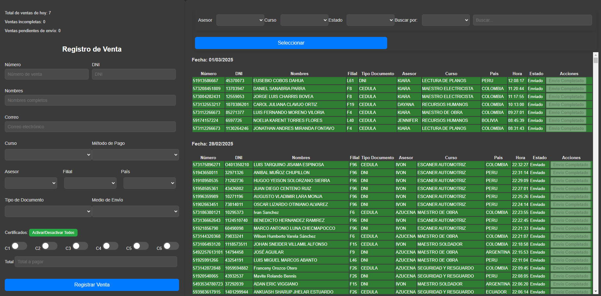

Certificación Online
En esta Web aprenderás el paso a paso de qué hacer en caso de que pidan certificados personalizados.
Paso 1: Captura de Datos
Explicación general del funcionamiento del sistema.

Nota: Estos Datos personales de el Cliente son importantes para la Certificacion.
Paso 2: Registrarlo
Una vez tengamos todos los Datos Personales de el Cliente solo seria Registrarlo

Alerta: En caso que el Documento de el Cliente tenga el numero 0 (cero) al inicio de su documento poner la letra O.